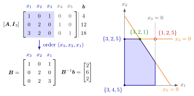

Basis and Basis Matrix¶
Definition¶
Let a linear program in standard form be given with . Adding a slack variable to every constraint gives the equation form
The original variables are the structural variables; the slack variables are numbered , with . From now on , and include the slack variables: the constraints read , , where has the columns and .
A basis is an index set of indices whose columns , , are linearly independent. The variables with are the basic variables, those with the nonbasic variables. The basic variables are put in an order, , where is the -th basic variable. The basis matrix is the matrix whose -th column is ; holds the nonbasic columns in the order of , and the objective coefficients of the basic variables in the order of . Then
The basic solution of fixes the nonbasic variables at :
It is a basic feasible solution if it satisfies all constraints, that is, if and only if .
Interpretation¶
A basis is a decision about which of the variables may be nonzero. Fixing the other at leaves equations in unknowns, and the basis matrix is the coefficient matrix of that square system. Requiring to be invertible makes the solution unique, so a basis names exactly one point.

The figure shows Example 1 below. The basis selects the columns of from ; in the order they form , and gives , , the green corner point. The nonbasic and are there, so the orange lines and are binding. The other labels are the bases of and of , and the basis of Example 2 below, whose basic solution , where the lines and meet, lies outside the feasible region.
Each variable is the indicator of one constraint: for a structural variable means that the sign constraint is binding, and means that constraint holds with equality. The nonbasic variables therefore name binding constraints, and is invertible exactly when these constraints are linearly independent. So a basic solution is a corner point, a point at which linearly independent constraints are binding, and a basic feasible solution is a feasible corner point, an extreme point of the feasible region.
The correspondence is not one to one. If more than constraints are binding at a corner point, the linear program is called degenerate, a basic variable has the value , and several bases describe the same point. Being basic is a property of the chosen index set, not of the value: a basic variable can be , a nonbasic one always is.
The name comes from Math II: the columns of form a basis of , and holds the coordinates of in it. OR Modelling calls the equation form the augmented form. In sensitivity analysis the inverse of an optimal basis is used again to test how far the data may change, for example in right-hand side ranging.
Key Results¶
- The basic solution of a basis is , , with objective value .
- A basic solution is feasible if and only if ; the basic feasible solutions are the feasible corner points.
- The slack basis has and basic solution , ; it is feasible exactly when .
- If a basic variable is , more than constraints (sign constraints included) are binding, the linear program is degenerate, and more than one basis can belong to the same corner point.
- There are at most bases, which bounds the number of corner points.
Examples¶
1. The bases of a two-variable linear program. For subject to , , , , write for the slacks. The corner points visited by the Simplex algorithm on this problem are with , with and with . For the last one, in the order ,
so , , and , the optimal value.
2. A basic solution that is not feasible, and a set that is not a basis. In the same linear program take , so : then , and . This is a basic solution, the intersection of the first two constraint lines, but it lies outside the feasible region. The set is not a basis at all: its columns , , all have second entry , so is singular. With the second equation would read ; geometrically, the lines and are parallel.
3. Computing a basic solution. For subject to , , , the basis sets and leaves
Back substitution gives , , . All values are nonnegative, so this is a basic feasible solution, with . Whether it is optimal is decided by the reduced costs.
4. One corner point, three bases. For the constraints , , with slacks , three constraints are binding at : , and . That is more than , so the linear program is degenerate. Any two of the three zero variables can be nonbasic: the bases , and all have the basic solution , , , with a basic variable equal to in the last two.
Prerequisites¶
- Standard Form of a Linear Program
- Augmented Form
- Basic Solution
- Corner Point
- Inverse and Singular Matrices
Related Concepts¶
- Simplex Tableau in Matrix Form
- Revised Simplex Algorithm
- Cycling
- Extreme Points of a Polyhedral Set
- Basic Feasible Solution
- Basic Variable
- Degeneracy
- Basis
Sources¶
- Math VI: Convexity and Optimization · Week 6
- H. E. Nusse and M. Dienstknecht, Math VI: Convexity and Optimization, lecture notes 2026–2027, Section 6.1–6.2
Aliases: basis matrix, basis of an LP, basic index set, equation form, structural variable Keywords: \boldsymbol{x}{\mathcal{B}}=\boldsymbol{B}^{-1}\boldsymbol{b}, \boldsymbol{x}}}=\boldsymbol{0}, [\boldsymbol{A},\boldsymbol{I{m}], \boldsymbol{B}\boldsymbol{x}}}+\boldsymbol{A{\mathcal{N}}\boldsymbol{x}, structural and slack variables, basic and nonbasic variables Symbols: element of, real numbers, subset }}=\boldsymbol{b}, \boldsymbol{B}^{-1}\boldsymbol{b}\geq\boldsymbol{0
Last updated: 5 November 2026 12:47
Basis and Basis MatrixAdding or Removing a VariableBig-M MethodChanging a Technology CoefficientCyclingNonoptimality and Reduced CostsRevised Simplex AlgorithmRight-Hand-Side RangingSimplex Tableau in Matrix FormStandard Form of a Linear ProgramAugmented FormBasic SolutionCorner PointInverse and Singular MatricesExtreme Points of a Polyhedral SetBasic Feasible SolutionBasic VariableDegeneracyBasis